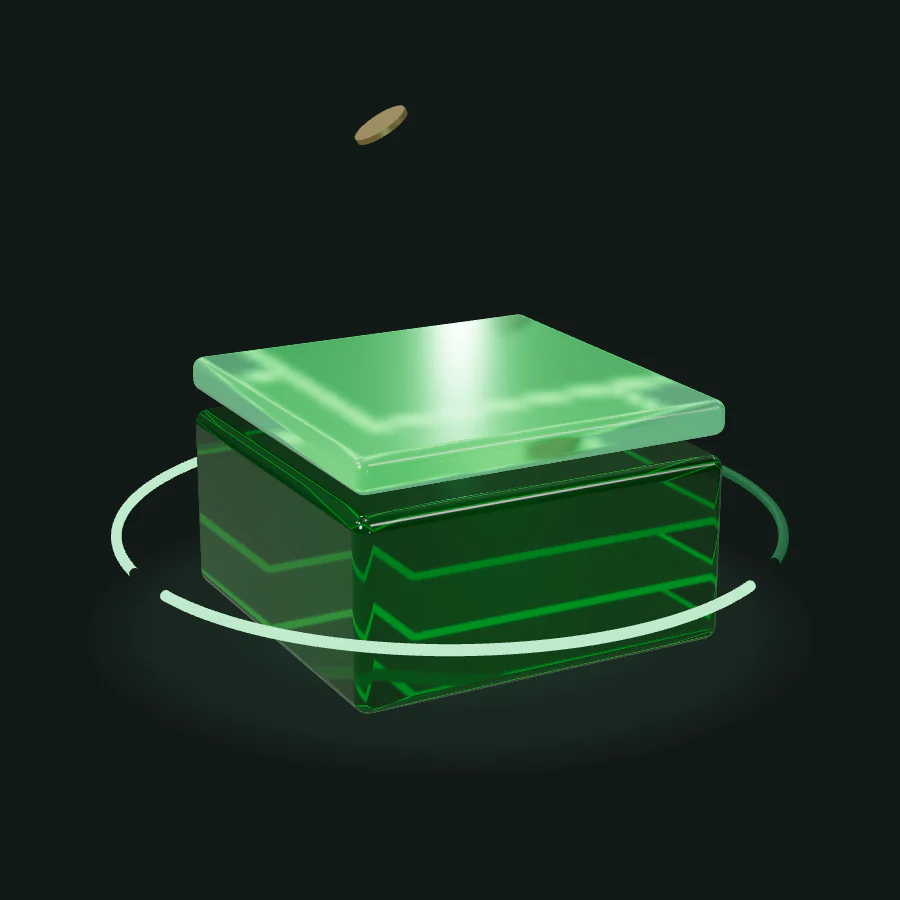

Этап 1 · адресное предложение
Для клиента, который переводит зарплату из другого банка. Ставка за поведение идёт на запас. Остальным он платит, и эти новые деньги тоже приносят процент.
на каждый день · 6%
60 000 ₽
запас · от 9,5% до 12,5%
240 000 ₽
кольцо ставки
2 из 3 надбавок
Пример: 300 000 ₽ новых денег. Деньги, которые уже лежали на картах Сбера, остаются без процентов.